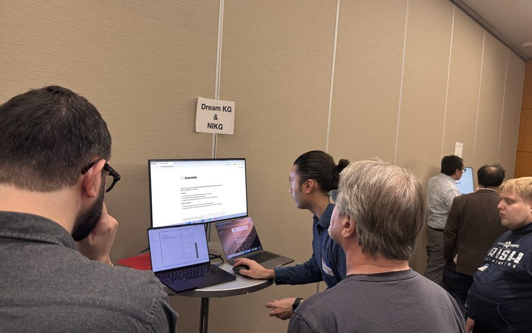
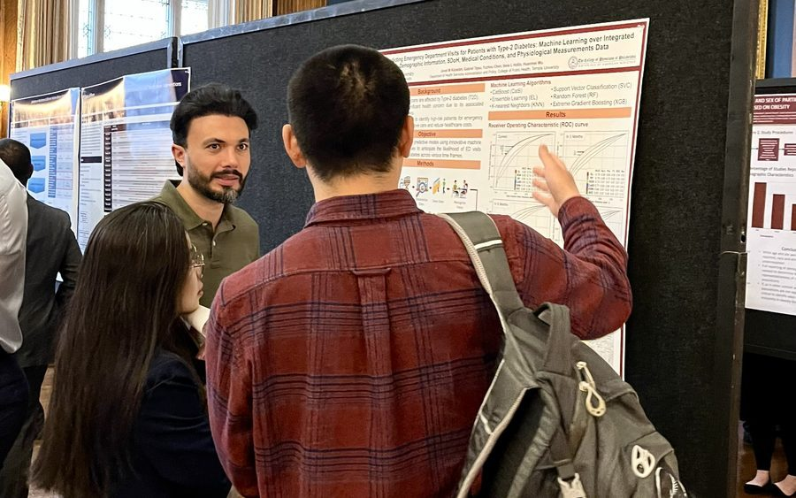

AI & Machine Learning
Methodological and applied research in machine learning, large language models, and natural language processing for healthcare — including model evaluation, explainability, fairness, and responsible AI.
Temple University · College of Public Health
Advancing data-driven public health and equitable clinical solutions through artificial intelligence, informatics, and implementation science.
We conduct interdisciplinary research at the intersection of health informatics, artificial intelligence, public health, and implementation science to advance data-driven health solutions. Our work spans methodological innovation, applied research, and real-world deployment — producing scholarship that informs policy, clinical practice, and health-system transformation.
To design and rigorously evaluate responsible and innovative health-informatics and artificial-intelligence solutions that strengthen public-health and healthcare systems.
To lead the development and real-world implementation of explainable, trustworthy, and scientifically grounded health technologies that transform public health and healthcare delivery.
Methodological and applied research in machine learning, large language models, and natural language processing for healthcare — including model evaluation, explainability, fairness, and responsible AI.

Scalable data infrastructures, analytics pipelines, and statistical methods for healthcare and population-health research, leveraging electronic health records, real-world data, and multi-source datasets.

Data-driven digital-twin models of patients, populations, and health systems that support simulation studies, intervention evaluation, and policy-relevant decision-making.

Translational research on healthcare delivery, clinical workflows, and implementation strategies so that informatics and AI innovations are effectively adopted in real-world settings.

High-quality peer-reviewed publications, open-science practices, and reusable tools, frameworks, and datasets that advance the broader research community.

Integrating social, structural, and geospatial determinants of health with clinical data to surface disparities, target interventions, and advance equitable outcomes across communities.
We welcome students, collaborators, and community partners who share our commitment to equitable, data-driven health.